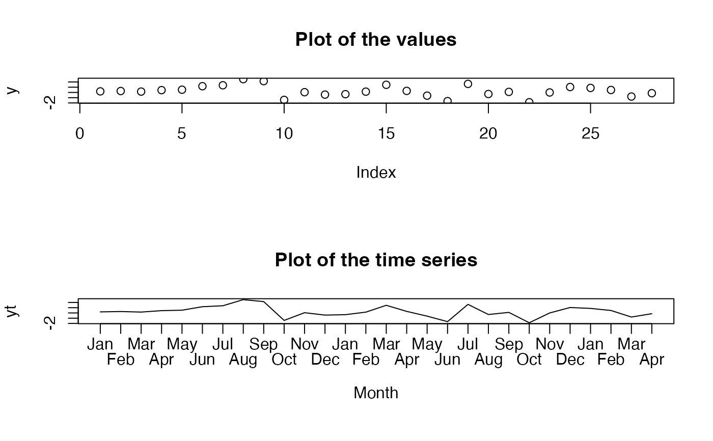

Calculate equispaced x positions.
tsxpos.RdCalculate equispaced x positions of values that have been plotted with the plot command.
Details
tsxpos calculates equispaced x positions for a vector of values or a time series created with the ts command from the stats package. It assumes that the default x limits have been used in the existing plot. It adds the appropriate padding if par("xaxs") is "r". It is mainly useful when x axis labels or some other markers are to be added to a time series plot.
A plot device must be open. If the user wishes to specify explicit x limits or the number of intervals (not values), these will override the calculations from the x values.
Examples
# create a vector of numbers
y<-rnorm(28)
par(mfrow=c(2,1),mar=c(6,4,4,2))
plot(y,main="Plot of the values")
# convert it into a time series object
yt<-ts(y,start=2011,frequency=12)
# don't use the default axis
plot(yt,main="Plot of the time series",xaxt="n",xlab="Month")
labelpos<-tsxpos(yt)
# display an axis showing the months only
staxlab(1,labelpos,rep(month.abb,length.out=28))

par(mfrow=c(1,1),mar=c(5,4,4,2))